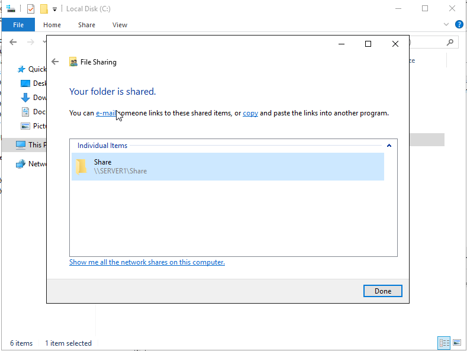

2 Shared folders from domain controller
>netlogon
>sysvol
Right click folder that is to be shared > Shre With > Specific People
Enter Who its shared with (you can type Everyone)

Next Step: Create A Group Policy
Head to the Logon section to upload a batch to mount the folder- Batch Script:
- > net use A: \\server1\share
- Batch Script Location:
- User Configuration > Policies > Windows Settings > Scripts(Logon/Logoff)
- Put script in this location
- > User\Scripts\Logon\<batch file here>
- simple shared folder mount within the network tied to cyber.local